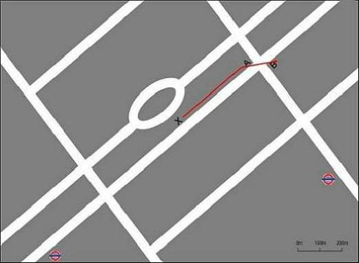

104 undergraduate students (20 male) participated in the study as part of an undergraduate laboratory class. The mean age was 19.44 years (SD = 2.74 years). Participants gave informed consent and the study was approved by University College London ethics committee.
The stimuli consisted of two crime scenarios, each with a different type of witness evidence: location and time (see Table 1). The use of a crime scenario allows the experimenter more explicit control of participants' knowledge base in the information they provide. This is in contrast to medical scenarios, where participants may vary in the amount of prior knowledge they have about a given condition. In each scenario a potential culprit for a theft was identified. Witness 1 had already been interviewed, and gave a positive identification of the potential culprit. Participants then had the choice to interview either witness 2 or witness 4. It was not an option to interview witness 3, and this option was only there to provide apparent parity between the number of choices. In the 'same' condition, witness 2 was in the same location as witness 1, and witness 4 was in another close by location. In the 'different' condition, witness 2 was in the same location as witness 1, and witness 4 was in distant location. In the 'time' scenario, this corresponded to potential sighting of the culprit at a different point in time: witness 1 and 2 sighted the culprit nearer the time of the crime than witness 3 and 4. Thus the diagnosticity was manipulated, as a more distant source of information can be less reliably linked to the event of interest (the crime in this scenario). Table 1 contains a more complete description of the scenarios.
| Components | Scenario 1: Location | Scenario 2: Time |
|---|---|---|
| Circumstances of crime | A case of snatch-theft occurred at 14.30 hrs at Hood Street, and a black leather handbag was stolen from the victim; items inside the handbag included about £80 cash and a mobile phone; the location of the crime is marked by the cross on the map; the victim was unable to give a facial description of the culprit; however, she saw the culprit flee the scene in the path as shown on the map. | A case of housebreaking and theft occurred at 53 Tourney Gardens at 02.30 hrs two days ago. |
| Circumstances of arrest | At 18.00 hrs, Police officers were alerted to a case of suspicious behaviour at a location 2km away; Max, a 42-year-old male, was brought back to station for questioning; Max was found to be in possession of the same model of mobile phone that was earlier stolen; you suspect that Max was the culprit in the earlier case; however, you are unable to establish any direct links to the stolen phone. | Yesterday, another case occurred at Grunden Avenue, located about 500m away from the earlier case; Quentin, a 37-year-old male was caught red-handed by officers on patrol; you want to check if Quentin was also responsible for the earlier case. |
| Prior probability of guilt | 50% | 50% |
| Course of action | You have decided to put Max in an identification parade. | You have decided to put Quentin in an identification parade. |
| Witnesses | Witnesses are shopkeepers at the respective locations; assessment of the witnesses shows that they have no affiliation to the accused, and have no reason to lie during the identification process. | Witnesses are the respective immediate neighbours of the victim; assessment of the witnesses shows that they have no affiliation to the accused, and have no reason to lie during the identification process. |
| 1 & 2 | Location A is near to the crime scene. | Witnesses from 51 Tourney Gardens claimed to have seen the culprit at 02:20 hrs |
| Witness 1 | Has identified the accused in the ID parade | Has identified the accused in the ID parade. |
| 3 & 4: ‘same’ condition | Location B is near to the crime scene. | Witnesses from 55 Tourney Gardens claimed to have seen the culprit at 02:20 hrs |
| 3 & 4: ‘different’ condition | Location B is far from the crime scene. | Witnesses from 55 Tourney Gardens claimed to have seen the culprit at 01:00 hrs |
The scenarios were formulated to fit into a causal hierarchy. The causal hierarchy used in this study comprised of a single candidate hypothesis of guilt, streaming into two consequences in the lower node, each resulting in two more consequences, giving 4 separate consequences in total. Figure 1 illustrates the causal hierarchy for the location scenario.
The information was presented in a story-based approach and the scenarios were constructed to have a moderate prior probability of guilt and high witness reliability. A diagrammatic aid was provided to the participants for the location scenario (see Figure 2). The causal hierarchy diagram was not shown to participants.
'Same' Condition |

'Different' Condition |
The participants were presented with the instructions and tasks on a computer. Participants were instructed to read the scenarios and choose to interview the witness that they thought would be most helpful in deciding whether or not the accused is guilty. The legal terms were clearly defined.
In each scenario, participants were informed of the crime committed, the circumstances under which the accused was arrested and the initial prior probability of the accused being guilty (50%). They were then presented with the four witnesses, and told that witness 1 had already been interviewed, who had provided evidence in favour of the accused being guilty. Participants were asked to select between two witnesses to interview next. The witnesses available for selection were from separate causal chains, with witness 2 constituting the causally proximal evidence, and witness 4 the causally diverse evidence. Witness 3 was not offered as a choice, so that there would be parity between the numbers of choices between the causal chains. After making their choice, participants were asked to rate how important they thought the witnesses were on a scale of 0-100 (0: not important; 100: extremely important).
For each scenario, the causal chain diagnosticities were manipulated. Both causal chains had the same diagnosticities under the 'same' condition, while the second chain had lower diagnosticity than the first under the 'different' condition. For example, the location scenario made use of the distance between the witness locations and the crime scene (see Figure 3 above). For the 'same' condition, both witness locations were roughly equidistant to the crime scene, whilst for the 'different' condition, location A was substantially nearer to the crime scene compared to location B. For the time scenario, the time at which the witnesses saw the culprit was manipulated whereby in the 'same' condition the potential sightings of the culprit occurred at the same time, whereas in the 'different' condition, the potential sightings of the culprit were 1 hour and 20 minutes separate in time. Participants were randomly allocated to complete the 'same' condition for the 'time' scenario and the 'different' condition for the 'location' scenario, or the opposite combination. For both scenarios, participants were required to indicate whether they would interview witness 2 or witness 4, and additionally rate the importance of these witnesses. As a manipulation check, participants were additionally asked to complete probability judgement questions. The example from the location scenario are provided below.
Probability Judgment Questions:
In the 'time' scenario from the first experiment, participants seemed to choose randomly between the witnesses. The stimuli provided to participants was changed in order to try exaggerate the differences in the diagnosticity of information in the 'different' condition, and also to provide greater diagrammatic aid.
35 participants (14 male) took part in the study. The mean age was 19.44 years (SD = 2.74 years). Participants were renumerated. The study was approved by UCL ethics committee.
The stimuli consisted of one crime scenario: time (see Table 2). In contrast to experiment 1, the diagnosticity of evidence in the 'different' condition was further reduced, by making the sighting of the accused more temporally different. Thus the causal chain diagnosticities were manipulated. A timeline was also provided (see Figure 3).
| Components | Scenario: time |
|---|---|
| Circumstances of crime | A case of housebreaking and theft occurred at 53 Tourney Gardens at 02:30 hrs two days ago. |
| Circumstances of arrest | Yesterday, at 04:00 hrs, another case occurred at Grunden Avenue, located about 500m away from the earlier case; Quentin, a 37-year-old male was caught red-handed by officers on patrol; you want to check if Quentin was also responsible for the earlier case at Tourney Gardens. |
| Prior probability of guilt | 50% |
| Course of action | You have decided to put Quentin in an identification parade. |
| Witnesses | Witnesses are the respective immediate neighbours of the victim; >assessment of the witnesses shows that they have no affiliation to the accused, and have no reason to lie during the identification process. |
| 1 & 2 | Witnesses from 51 Tourney Gardens claimed to have seen the culprit at 02:20 hrs on the night of the crime. |
| 3 & 4: 'same' condition | Witnesses from 55 Tourney Gardens claimed to have seen the culprit at 02:20 hrs on the night of the crime. |
| 3 & 4: 'different' condition | Witnesses from 55 Tourney Gardens claimed to have seen the culprit at 03:00 hrs the night before. |
| Witness 1 | Has identified the accused in the ID parade. |
'Same' Condition |
'Different' Condition |
The instructions and tasks were identical to those used in the first study. Participants were randomly allocated to the 'same' or 'different' condition, and were required to choose between two witnesses to interview, as well as made judgments on the importance of the witnesses.